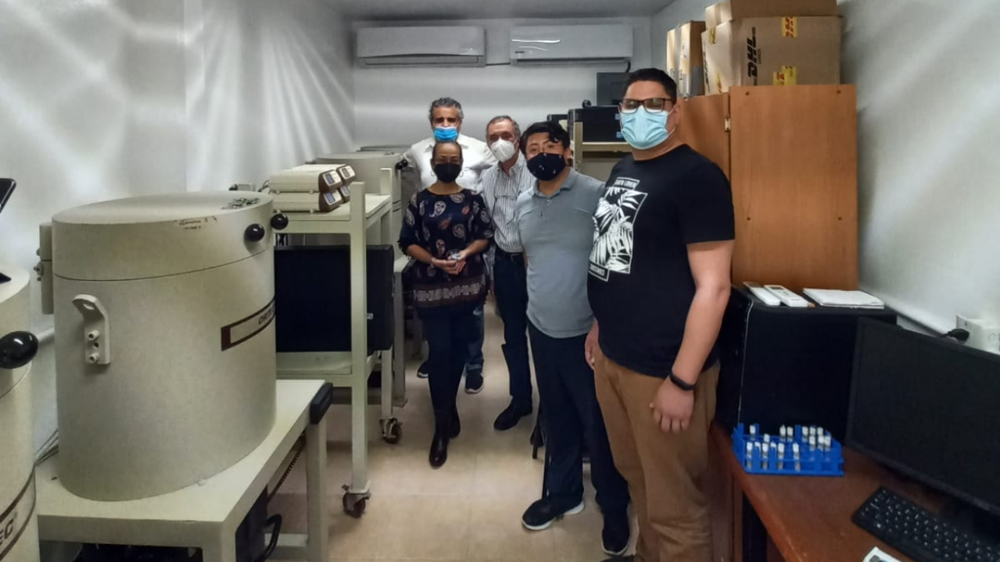
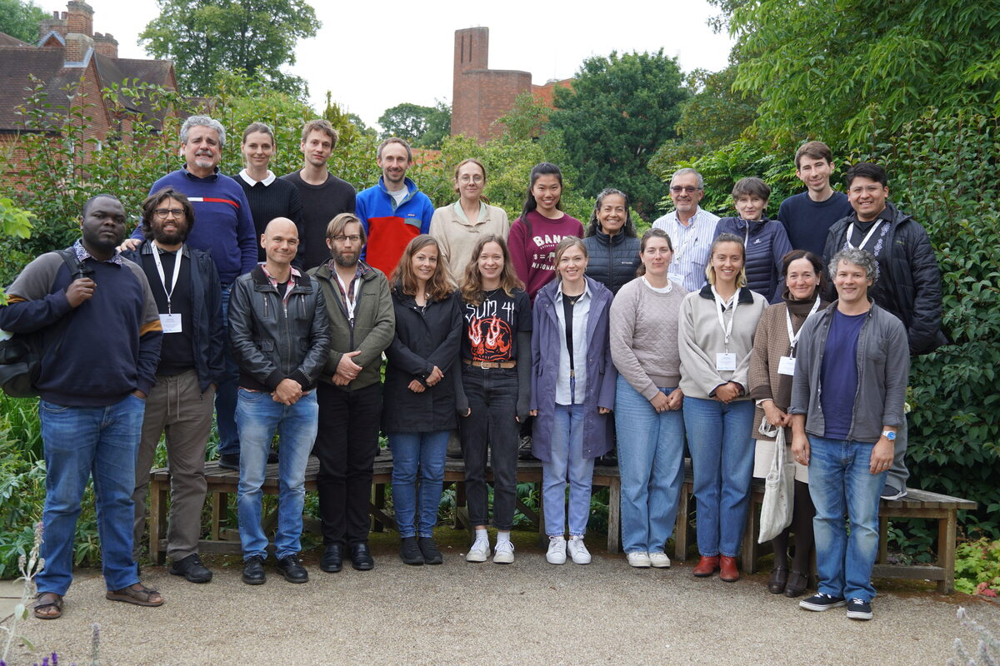

Bayesian Statistics • Statistical Modelling • Age-Depth Models • Palaeoclimate Inference • Uncertainty Quantification
📧 aquino@cimat.mx | 🔗 ORCID | Google Scholar | Español
I am a statistician from Oaxaca, Mexico, and an Associate Researcher C at the Centro de Investigación en Matemáticas (CIMAT) in Guanajuato. My research focuses on Bayesian inference, statistical modelling, computational methods, and uncertainty quantification.
Much of my work concerns environmental and palaeoclimate data. I develop statistical methods for constructing chronologies from radiocarbon and 210Pb measurements, synchronizing proxy records, and calibrating environmental proxies. I am also interested in methods that use palaeoclimate evidence to evaluate climate-model simulations and their uncertainties.
Before joining CIMAT in 2025, I was a Research Associate at the University of Cambridge. I completed my PhD at Queen's University Belfast and have also worked on statistical problems in linguistics and electoral studies.
I develop open-source statistical software in R and Python and welcome collaborations on Bayesian methods and their applications. I am also happy to hear from students interested in research in statistics.

